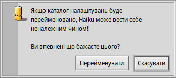
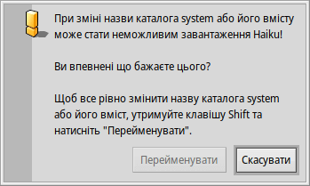

Структура файлової системи
Структура файлової системи Haiku досить прозора, в якій намагаються завжди використовувати незашифровані назви для файлів і каталогів, щоб у користувача не виникало питань з приводу їх тлумачення. Файли та каталоги, які важливі для належного функціонування системи, захищені від випадкової зміни. При намаганні виконати такі зміни, система сповіщає користувача інформаційними повідомленнями:
 Друге попередження з'являється коли Ви робите спробу перейменувати або видалити щось у ієрархії системних файлів. При цьому, кнопка "" стає доступною якщо утримувати натиснутою клавішу SHIFT.
При типовому варіанті інсталяції системи, завантажувальний том містить кореневий каталог з двома окремими каталогами файлової ієрархії:
| /boot/system/ | Містить системні файли та програми/пакети, до яких мають спільний доступ усі користувачі. | |
| /boot/home/ | Це Ваш особистий каталог, де Ви зберігаєте свої дані та налаштування а також програми/пакети без спільного доступу для інших користувачів. |
На теперішній час Haiku не відноситься до операційних систем з багатьма користувачами (multi-user), тому різниця між режимами спільного доступу до програм/пакетів не має очевидного ефекту, оскільки є лише один користувач з одним домашнім каталогом. Можливо, з часом з'явиться підтримка більшої кількості користувачів, тому, зараз є сенс навчитися працювати у такій парадигмі від самого початку.
 Системний каталог - /boot/system/
Системний каталог - /boot/system/
Under Haiku's predecessor BeOS, this folder was named /boot/beos/. You may still find it in some older documentation (e.g. in the original BeBook).
Most of the folders inside /boot/system/ are read-only, which is sensible as they contain the files necessary for Haiku to function correctly and therefore have to be safe from (accidental) alteration. To indicate the write-protection of a folder, its Tracker window has a gray background. The only user-writable folders are:
| /boot/system/cache/ | Містить файловий кеш і тимчасову папку, пов'язану з /tmp/. | |
| /boot/system/non-packaged/ | Містить папки та файли, які не входять до .hpkg (наприклад, як у старих архівів BeOS). | |
| /boot/system/packages/ | Містить пакети Haiku (.hpkg). Окрім зберігання системних пакетів Haiku, Ви можете додавати/вилучати пакети, до яких мають спільний доступ усі користувачі. | |
| /boot/system/settings/ | Містить загальносистемні налаштування. | |
| /boot/system/var/ | Містить журнали, такі як syslog (важливі для усунення несправностей) і є типовим місцем розташування файлу підкачки. |
Додаткову інформацію про каталоги packages і non-packaged дивіться у розділі Applications (Програми).
Каталог користувача (домашній) - /boot/home/
Цей каталог належить Вам. Тут Ви можете створювати та видаляти файли і папки за власним бажанням. (До речі, тильда («~») є ярликом для Вашого домашнього каталогу, тому Вам не обов'язково писати "/boot/home/" у терміналі.)
Файли, до яких Ви хочете надати спільний доступ у майбутньому середовищі з багатьма користувачами, слід розміщувати поза межами /boot/home/. Наприклад, Ви можете створити папку /boot/all-users/ і покласти ці файли туди.
| ~/Desktop/ | Містить файли Вашого робочого столу. Подвійний клік не відкриє його, оскільки каталог і так завжди на виду. Якщо Ваші файли закриті відкритими вікнами, просто швидко перейдіть до іншої робочої області (Workspace). Звісно, деталізація також можлива по правому кліку миші. | |
| ~/mail/ | Це стандартне розташування Вашої пошти. | |
| ~/people/ | Це стандартне розташування Вашої записної книжки з контактами, дивіться People (Контакти). | |
| ~/queries/ | Це стандартне розташування Ваших пошукових запитів, які зберігаються протягом 7 днів. Дивіться Queries (Запити). |
The folder /boot/home/config/ is special: just like /boot/system/ it's mostly under the control of the package management and therefore read-only. Here too, the Tracker windows of these write-protected folders have a gray background. It also contains these similar user-writable folders:
| ~/config/packages/ | Містить пакети Haiku (.hpkg). Ви можете додавати/вилучати пакети, до яких не мають спільного доступу усі інші користувачі. | |
| ~/config/non-packaged/ | Містить папки та файли, які не входять до .hpkg (наприклад, як у старих архівів BeOS) та до яких не мають спільного доступу усі інші користувачі. | |
| ~/config/settings/ | Цей каталог містить налаштування всіх програм і деякі настройки системи. Не всі програми зберігають свої налаштування у власних підкаталогах, багато таких, що просто поміщають сюди свої конфігураційні файли. |
Додаткову інформацію про каталоги packages і non-packaged дивіться у розділі Applications (Програми).
Це деякі з найбільш цікавих підкаталогів, які містить каталог ~/config/settings/:
| boot/ | Місце де зберігаються сценарії користувача, які виконуються до або після завантаження чи вимкнення системи. | |
| boot/launch/ | Містить посилання (links) на програми або документи які потрібно автоматично запускати при кожному завантаженні системи. | |
| beos_mime/ або mime_db/ | База даних MIME у якій Haiku відстежує різні типи файлів та їхні налаштування. | |
| deskbar/menu/ | Файли, папки, запити та посилання на них при копіюванні в цей каталог відображаються в меню Deskbar. | |
| kernel/drivers/ | Містить файли налаштувань драйверів. У каталозі знаходиться один із файлів налаштувань, який може зацікавити: kernel пропонує деякі низькорівневі настройки, такі як вимкнення SMP, активація послідовної відладки або увімкнення розширеного управління живленням. Ви можете активувати рядок настройки, видаливши символ коментаря «#». Будьте обережні! | |
| Tracker/ | Крім різних файлів налаштувань для Tracker, є кілька цікавих вкладених каталогів: | |
| DefaultFolderTemplate/ | Відображає і ставить по ранжиру всі атрибути та розмір вікна за Вашим вподобанням. Кожна нова папка, яку Ви створите, використовуватиме його як шаблон. | |
| DefaultQueryTemplates/ | Містить шаблони формату вікон результатів виконання запитів для певних типів файлів. Дивіться розділ Запити: Вікно результатів пошуку. | |
| Go/ | Додайте сюди посилання на Ваші обрані папки, щоб зробити їх доступними, наприклад, у діалогах «Відкрити» і «Зберегти». Дивіться розділ GUI: Вибрані та недавні папки. | |
| Tracker New Template/ | Додайте шаблон для будь-якого типу файлу, який потім буде доступний у меню файлового менеджера. Дивіться розділ Tracker: Робота з файлами. |